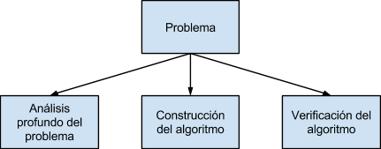
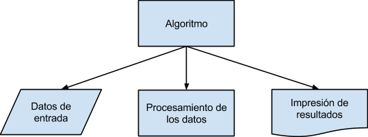

Definiciones
Casi inconscientemente, los humanos efectuamos cotidianamente una serie de pasos, procedimientos o acciones que nos permiten alcanzar un resultado o resolver un problema.
Esta serie de pasos, procedimientos o acciones, comenzamos a aplicarlas muy temprano en la mañana cuando, por ejemplo, decidimos tomar un baño. Posteriormente cuando pensamos en desayunar también seguimos una serie de pasos que nos permiten alcanzar un resultado específico: tomar el desayuno. La historia se repite innumerables veces durante el día. Continuamente seguimos una serie de pasos o conjunto de acciones que nos permiten alcanzar un resultado. Estamos en realidad aplicando un algoritmo para resolver un problema.
"Formalmente definimos un algoritmo como un conjunto de pasos, procedimientos o acciones que nos permiten alcanzar un resultado o resolver un problema."
Definición Algoritmo: En matemáticas, lógica, ciencias de la computación y disciplinas relacionadas, un algoritmo (del griego y latín, dixit algorithmus y éste a su vez del matemático persa Al-Juarismi) es un conjunto preescrito de instrucciones o reglas bien definidas, ordenadas y finitas que permite realizar una actividad mediante pasos sucesivos que no generen dudas a quien deba realizar dicha actividad. Dados un estado inicial y una entrada, siguiendo los pasos sucesivos se llega a un estado final y se obtiene una solución. Los algoritmos son el objeto de estudio de la algoritmia.

Características de un algoritmo:
- Precisión: Los pasos a seguir en el algoritmo deben ser precisados claramente.
- Determinismo: El algoritmo, dado un conjunto de datos idénticos de entrada, siempre debe arrojar los mismos resultados.
- Finitud: El algoritmo, independientemente de la complejidad del mismo, siempre debe ser de longitud finita.

Un algoritmo consta de tres secciones o módulos principales.
- Análisis profundo del problema: Representa la operación o acción que permite en ingreso de los datos del problema.
- Construcción del algoritmo: Representa la operación o conjunto de operaciones secuenciales, cuyo objetivo es obtener la solución al problema.
- Verificación del algoritmo: Representa una operación o conjunto de operaciones que permiten comunicar al exterior el o los resultados alcanzados.